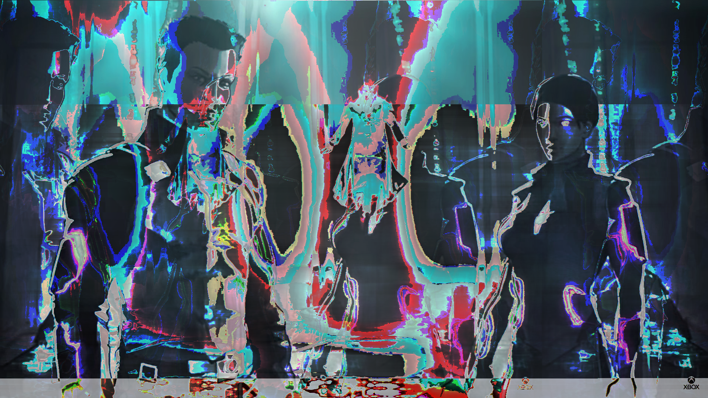
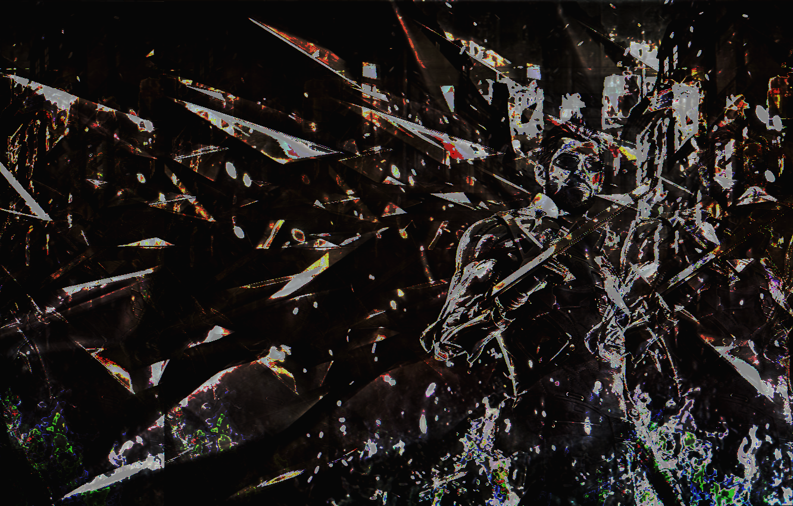
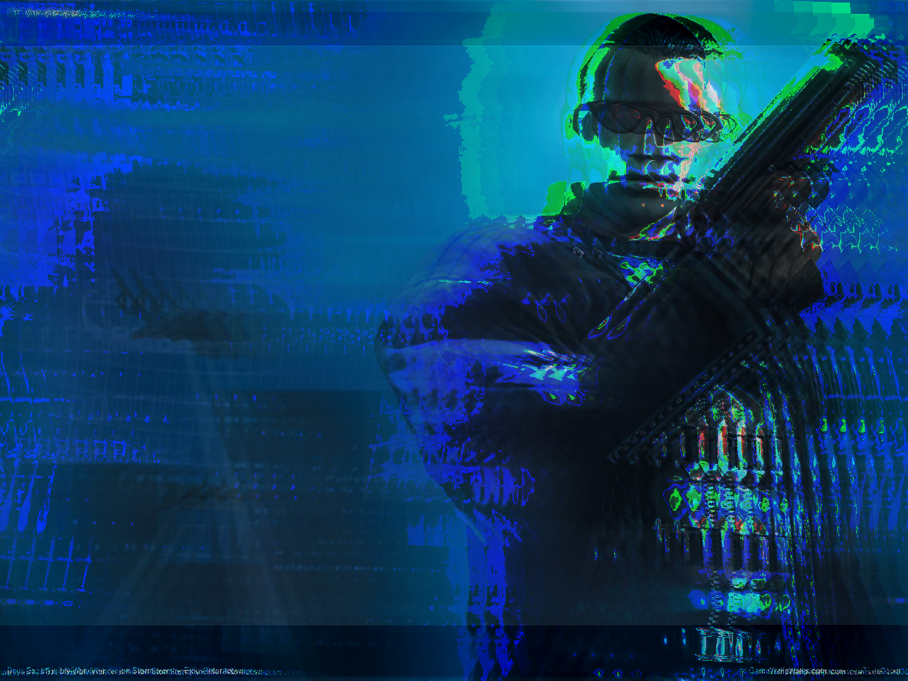
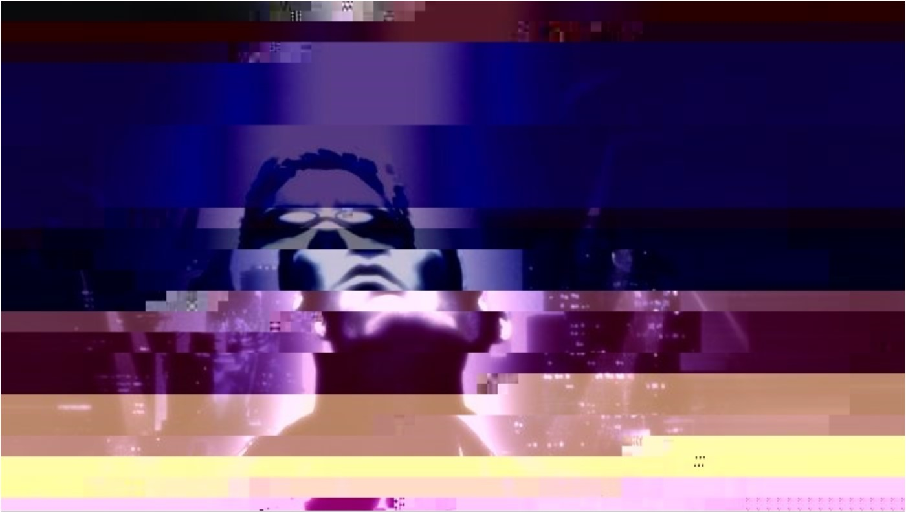
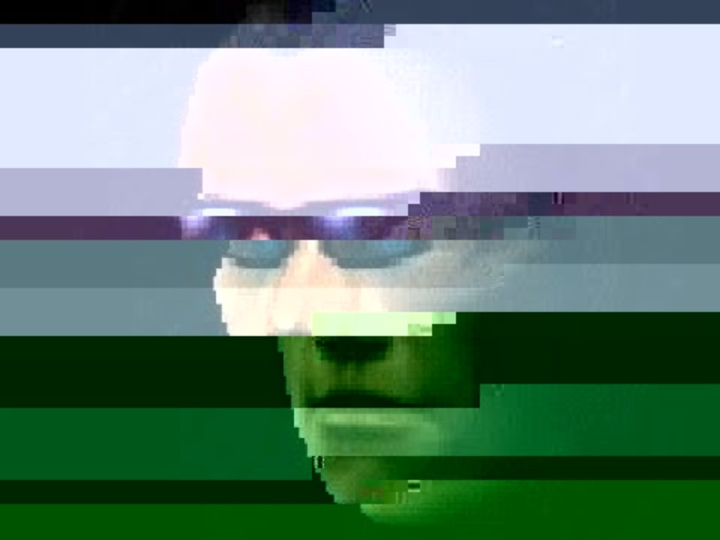

Glitch Art
This was the first project of ART-74 Intro to Digital Media.
The objective of the project was to manipulate photo files through
the manipulation of its code in notepad or by converting them into a .RAW file in Audacity.
The common theme in the photos I have chosen was that they all came from the video game franchise Deus Ex,
a series with heavy cyberpunk motifs.





"You will soon have your God, and you will make it with your own hands."